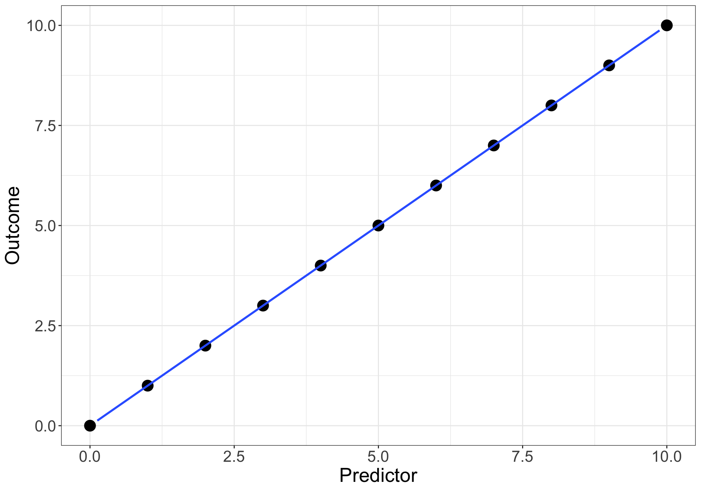
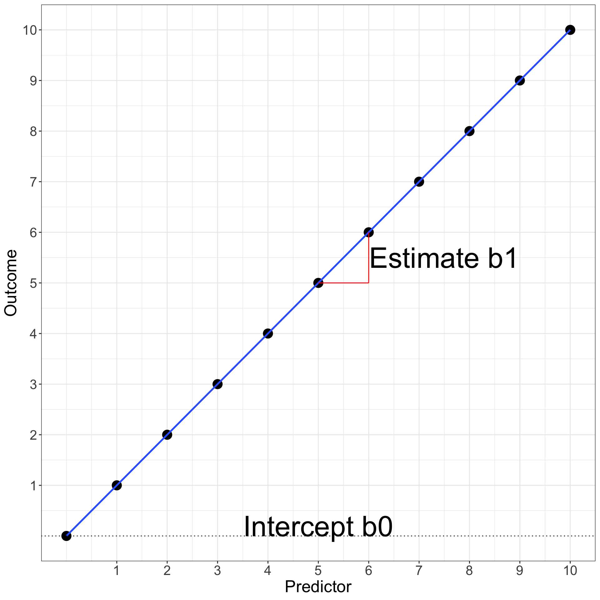
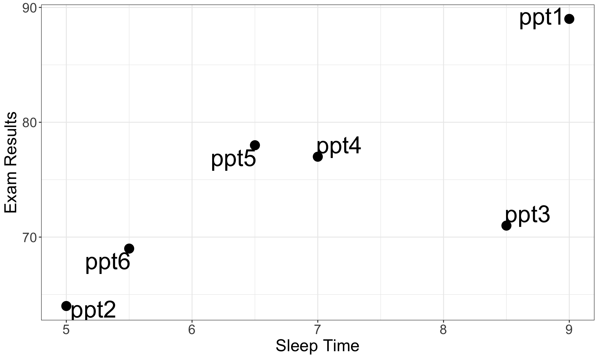
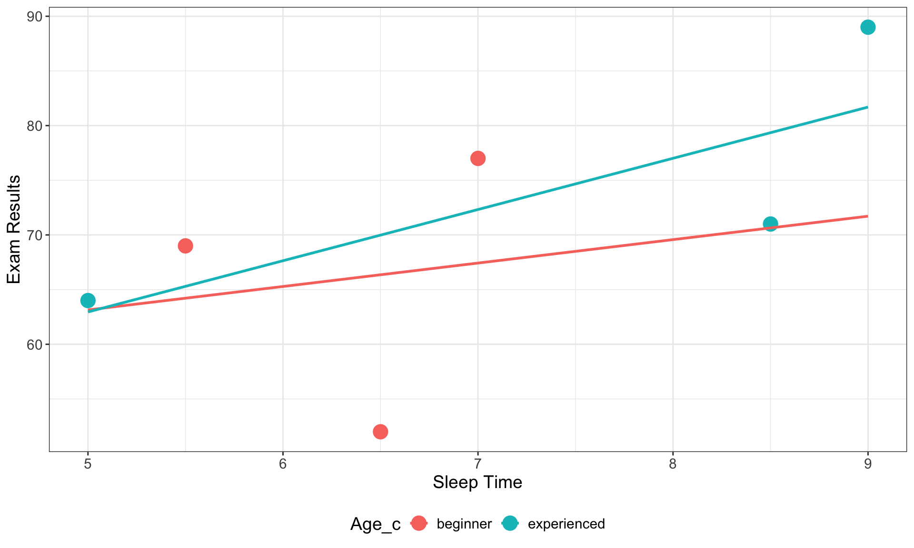

flowchart LR
A[Introduction] --> B[Literature<br>Review]
B --> C[Methods]
C --> D[Results]
D --> E[Discussion &<br>Conclusion]
To understand the statistics in the results section it is essential to identify the concepts presented in each section:
flowchart LR
A[Introduction] -- Variables --> B[Literature<br>Review]
B -- Hypotheses --> C[Methods]
C -- Model &<br>Equation --> D[Results]
D -- Statistical<br>Test--> E[Discussion &<br>Conclusion]
1. Model Representation in the Method Section of Academic Reseach Paper
Method Section in Academic Papers
The method section is always structured in the same way:
1. Observations
Short section presenting where the data are coming from. If they are coming from human participants, then their average age and gender is indicated.
2. Variables
Short section presenting each variable as well as their type and role.
3. Procedure
Short section presenting how data were collected.
4. Data Analytics
Short section to display how the hypotheses are tested by displaying a graphical representation of the Model and its corresponding Equation(s).
Model Representation
Models are an overview of the predicted relationship between variables stated in the hypotheses
You must follow these rules:
Rule 1: All the arrows correspond to an hypothesis to be tested
Rule 2: All the tested hypotheses have to be represented with an arrow
Rule 3: Hypotheses using the same Outcome variable should be included in the same model
Rule 4: Only one Outcome variable is included in each model (except for SEM model)
Model Representation
A simple arrow is a main effect
A crossing arrow is an interaction effect
Note: By default, an interaction effect involves the test of the main effect hypotheses of all Predictors involved
Structure of Models
Distinguish square and circles
squares are actual measures/items
circles are latent variables related to measures/items
Example:
\(Salary\) is directly measured (in $, €, or £) so it’s a square.
\(Job\,Satisfaction\) is a latent variable with several questions so it’s a circle.
Items used for latent variables can be omitted in a model, variables are the most important.
Main Effect Relationship
Relationship between one Predictor and one Outcome variable
This model tests one main effect hypothesis
Relationship between two Predictors and one Outcome variable
This model tests two main effect hypotheses
Interaction Effect Relationship
An interaction means that the effect of a Predictor 1 on the Outcome variable will be different according the possibilities of a Predictor 2 (also called Moderation).
Effects representation:
Exactly the same results:
This model tests three hypotheses: 2 main effects and 1 interaction effect
Types of Model
Simple Model
One or more predictors
Only one outcome
Made of main or/and interaction effects
Mediation Model (simple or moderated)
At least 2 predictors (one call Mediator)
Only one outcome
Made of main effects only for simple mediation / main and interaction effects for moderated mediation
Structural Equation Model (SEM)
At least 2 predictors (usually latent variables)
One or more outcome
Made of main or/and interaction effects
Simple Model
Simple Models are the most statistically powerful, easy to test and reliable models. Always prefer a simple model compared to a more complicated solution.
Warning
Including interaction effect requires a significantly higher sample size.
Example:
This model tests four hypotheses:
3 main effects
1 interaction effect
Mediation Models
A Mediation model is a complex path analysis between 3 variables, where one of them explains the relationship between the other two. It is usually used to identify cognitive process in psychology.
Example:
This model tests one hypothesis:
1 mediation effect
but it requires 2 main effects
Structural Equation Model
A Structural Equation Model (SEM) is a complex path analysis between multiple variables including multiple Outcomes and using factor analysis for latent variable estimation.
Item contribution to a latent variable
The relationship between items of a scale and their corresponding latent variable is considered as significant by default if the scale is valid
For example, this model tests four hypotheses
A Good Model
Comprehensiveness: Explains a wide range of phenomena
Internal Consistency: Propositions and assumptions are consistent and fit together in a coherent manner
Parsimony: Contains only those concepts and assumptions essential for the explanation of a phenomenon
Testability: Concepts and relational statements are precise.
Empirical Validity: Holds up when tested in the real world.
A Good Model
Example:
A Bad Theory/Model
Too complicated
Does not explain many things
Cannot be tested
Is it bad?
Representing a Model
The representation of a model can easily be done directly in a manuscript written with Microsoft Words
For more details, is it also possible to draw the model in Microsoft PowerPoint and to copy-paste it in Microsoft Words.
Warning
Do NOT fill boxes with any color, use only black and white colors.
Use line arrow, no thick arrows allowed.
Representing a Model
Beside MS Words and PowerPoint, there are some ways to draw models in a nicer way.
Flowchart Software/Websites
There are many of them and google would find them very quickly but to my knowledge, https://www.diagrams.net/ is free, easy to use and very efficient.
Representing a Model
Flowchart Coding Languages
Going further into details of how to design academic models, flowchart coding languages are the ultimate steps.
Instead of using a GUI, it is possible to draw models from a couple of lines of code which is faster after practising a lot.
To my knowledge, the main flowchart coding language tool implementing the DOT style are:
After installed the extension, use GraphViz and remove the code corresponding to the default example.
️ Your Turn!
In the research paper you have selected, draw the model(s) tested.
Remember, there is only 1 Outcome variable per model and it is not possible to draw two models with the same Outcome variable.
Send me your figure by email at damien.dupre@dcu.ie before the next lecture.
2. Understanding the Equation used to Test Hypotheses
A Basic Equation
Let’s imagine the perfect scenario: your predictor Predictor variable explains perfectly the outcome variable.
The corresponding equation is: \(Outcome = Predictor\)
Observation
Outcome
Predictor
a
10
10
b
9
9
c
8
8
d
7
7
e
6
6
f
5
5
g
4
4
h
3
3
i
2
2
j
1
1
k
0
0

A Basic Equation
In the equation \(Outcome = Predictor\), three coefficients are hidden because they are unused:
the intercept coefficient\(b_{0}\) (i.e., the value of the Outcome when the Predictor = 0) which is 0 in our case
the estimate coefficient\(b_{1}\) (i.e., how much the Outcome increases when the Predictor increases by 1) which is 1 in our case
the error coefficient\(e\) (i.e., how far from the prediction line the values of the Outcome are) which is 0 in our case
A Basic Equation
So in general, the relation between a predictor and an outcome can be written as: \[Outcome = b_{0} + b_{1}\,Predictor + e\]
which is in our case:
\[Outcome = 0 + 1 * Predictor + 0\]
A Basic Equation
The equation \(Outcome = b_{0} + b_{1}\,Predictor + e\) is the same as the good old \(y = ax + b\) (here ordered as \(y = b + ax\)) where \(b_{0}\) is \(b\) and \(b_{1}\) is \(a\).
It is very important to know that under EVERY statistical test, a similar equation is used (t-test, ANOVA, Chi-square are all linear regressions).

Relationship between Variables
Relationship between a \(Predictor\) and an \(Outcome\) variable (stated in a main effect hypothesis or in an interaction effect hypothesis) is analysed in terms of:
“How many units of the Outcome variable increases/decreases/changes when the Predictor increases by 1 unit?”
For example:
How much Job Satisfaction increases when the Salary increases by €1?
Relationship between Variables
The value of how much of the Outcome variable changes:
Is called the Estimate (also called Unstandardised Estimate)
Uses the letter \(b\) in equations (e.g., \(b_1\), \(b_2\), \(b_3\), …)
For example:
If Job Satisfaction increases by 0.1 on a scale from 0 to 5 when the Salary increases by €1, then b associated to Salary is 0.1
Significance of Relationships
To evaluate if the strength of the relationship \(b\) between a Predictor and an Outcome variable is significant, an equation is statistically tested using all the predictors related to the same Outcome.
The basic equation of a statistical model is:
\[Outcome = b_0 + b_n \,Predictors + Error\]
where the \(Predictors\) includes all the \(n\) variables used as predictor in formulated hypotheses using this specific \(Outcome\) variable and being associated to a specific \(b\) estimate.
Significance of Relationships
\[Outcome = b_0 + b_n \,Predictors + Error\]
This expresses the idea that:
The Outcome can be described by one or multiple predictors.
The remaining part of the Outcome’s variability that is not explained by the predictors is call the Error.
Equations, Variables and Effect Types
Except in special cases:
An Outcome (or Dependent Variable) has to be Continuous
In this equation, \(Salary\) is continuous with a main effect on \(Job\,Satisfaction\) (\(b_{1}\)) and \(Origin\) is categorical with a main effect on \(Job\,Satisfaction\) (\(b_{2}\))
Equations, Variables and Effect Types
An interaction effect is represented by multiplying the 2 predictors involved:
In this equation, \(Salary\) is continuous with a main effect on \(Job\,Satisfaction\) (\(b_{1}\)), \(Origin\) is categorical with a main effect on \(Job\,Satisfaction\) (\(b_{2}\)), and \(Salary\) with \(Origin\) have an interaction effect on \(Job\,Satisfaction\) (\(b_{3}\))
Relevance of the Intercept
To test hypotheses, only the \(b\) values associated to Predictors / Independent Variables are important.
The intercept is always included in an equation but its result is useless for hypothesis testing.
Let’s see why the intercept is always included but discarded most of the time.
Relevance of the Intercept
Imagine we want to test the relationship between GDP per Capita and Life Expectancy of countries in the world. Let’s compare a model without and a model with intercept:
Without intercept: \(Life\,Expectancy = b_{1}\,GDP\,per\,Capita + e\)
With intercept: \(Life\,Expectancy = b_{0} + b_{1}\,GDP\,per\,Capita + e\)
Relevance of the Intercept
If the intercept is not included, the intercept is zero and can lead to estimation errors
Notes on the Equations
1. Greek or Latin alphabet?
\[Y = \beta_{0} + \beta_{1}\,X_{1} + \epsilon \; vs. \; Y = b_{0} + b_{1}\,X_{1} + e\]
2. Subscript \(i\) or not?
\[Y = b_{0} + b_{1}\,X_{1} + e \; vs. \; Y_{i} = b_{0} + b_{1}\,X_{1_{i}} + e_{i}\]
Exactly like with models, there are different ways to communicate an equation in Academic research outputs.
The least sophisticated approach would be to type the equation in Microsoft Words and to apply some italics and subscript style a posteriori.
While there is nothing wrong with this approach, note that Microsoft Words has a tool to insert equations (Insert -> Equations), then a GUI will help you to design special characters in equations.
Representing an Equation
Now there is a better way, which is also more complicated.
\(\LaTeX\) is used for entire manuscripts with all the specific design requirements imposed by ths style of academic journals. LaTex is the hell and we will see a specific approach to avoid it but the LaTex style for equations is the best.
Representing an Equation
Here are the most basic rules:
Starts with \begin{equation} and ends with \end{equation}
I will show you some results. Using these results:
Identify the role of variables,
Formulate the tested hypotheses
Draw the corresponding model, and
Translate it in an equation
Example 1
Using the results obtained, identify the role of variables, formulate the tested hypotheses, draw the corresponding model, and translate it in an equation
Data
Participant
Sleep Time
Exam Results
ppt1
9.0
89
ppt2
5.0
64
ppt3
8.5
71
ppt4
7.0
77
ppt5
6.5
78
ppt6
5.5
69
Visualisation

05:00
Example 1
Variables:
Outcome = Exam Results (from 0 to 100)
Predictor = Sleep Time (from 0 to Inf.)
Alternative Hypothesis:
\(H_a\): Exam Resultsincreases when Sleep Time increases
(\(H_0\): Exam Resultsstay the same when Sleep Time increases)
Using the results obtained, identify the role of variables, formulate the tested hypotheses, draw the corresponding model, and translate it in an equation
Data
Participant
Sleep Time
Exam Results
Age_c
ppt1
9.0
89
experienced
ppt2
5.0
64
experienced
ppt3
8.5
71
experienced
ppt4
7.0
77
beginner
ppt5
6.5
52
beginner
ppt6
5.5
69
beginner
Visualisation

05:00
Example 2
Variables:
Outcome = Exam Results (from 0 to 100)
Predictor 1 = Sleep Time (from 0 to Inf.)
Predictor 2 = Age (experienced vs beginner)
Alternative Hypotheses:
\(H_{a_{1}}\): Exam Resultsincreases when Sleep Time increases
\(H_{a_{2}}\): Exam Results of experienced students are higher than for beginner students
\(H_{a_{3}}\): The effect of Sleep Time on Exam Results is higher for experienced than for beginner students
 Is it bad?
Is it bad?